Digital world models
How can agents build predictive models of enterprise software, terminals, databases, policies, and organizations — and use those models to plan by imagining consequences?
I am a Staff Research Scientist and Research Lead at ServiceNow Research, an Adjunct Professor, and a core industry member at Mila Montréal. My group studies generally intelligent machines that understand, reason, and act in the world, especially the digital worlds where today’s AI systems will first become useful.
Our starting point is long-horizon operations: documents, screens, terminals and software workflows. We look for the hard problems hidden in real data, then build simulated environments and worlds where agents can learn, fail, adapt, and be measured.
This connects multimodal perception, terminal and computer-use agents, reinforcement learning and world-model-based evaluation. The goal is practical and scientific: reliable AI for real work, and digital ecosystems that serve as laboratories for understanding the principles of intelligence itself.
I obtained my Ph.D. at Mila / Université de Montréal, supervised by Prof. Aaron Courville, and spent time as a Research Scientist Intern at Google DeepMind. Previously, I completed my Master’s in Computer Science at IIT Delhi.
Recent releases, papers, and open-source milestones.
The first-principles problems behind generally capable digital agents.
How can agents build predictive models of enterprise software, terminals, databases, policies, and organizations — and use those models to plan by imagining consequences?
How can agents decompose work into subgoals, adapt to hidden state, recover from mistakes, and coordinate across tools, workflows, and people?
How can rich digital ecosystems become laboratories where agents practice, self-improve, and reveal the true gaps between benchmark capability and operational intelligence?
Selected projects and papers. See Google Scholar for the full publication list.
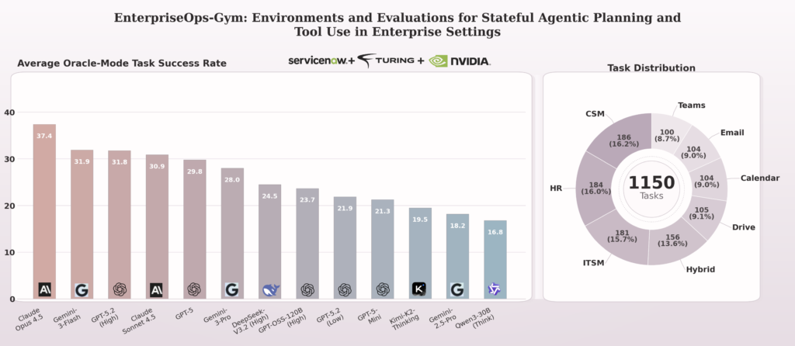
We study whether agents are ready for real enterprise work.
Reliable automation is still far from solved. We released our largest, most realistic environment to evaluate long-horizon agent planning tool execution under real enterprise constraints.
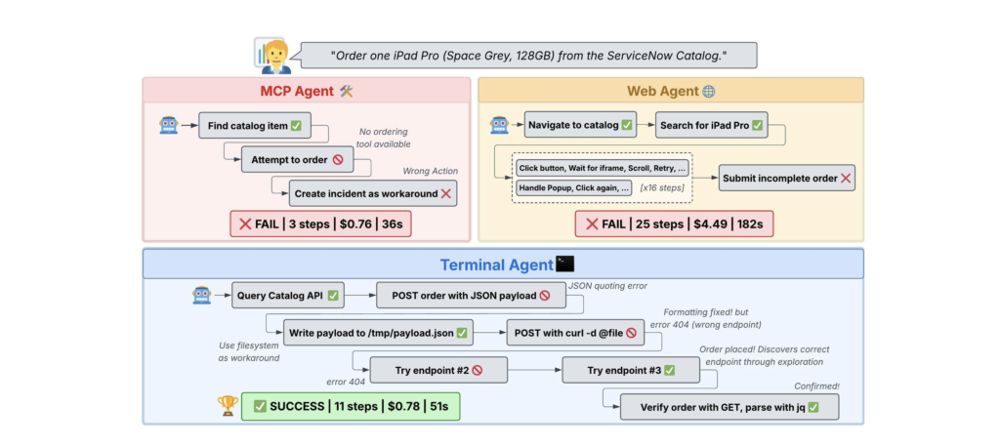
Terminal-based coding agents with direct API access match or outperform complex MCP and GUI agents, proving that strong foundation models need only simple programmatic interfaces for enterprise automation. Terminal agents achieve the same accuracy as web agents but are 5 to 6x cheaper and outperform MCP agents while staying cost-neutral.
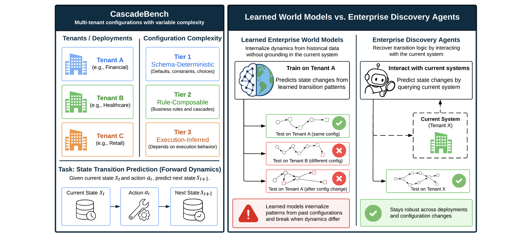
This work studies whether enterprise agents need learned world models and shows why contextual information is critical for accurately inferring system dynamics in long-horizon digital workflows.
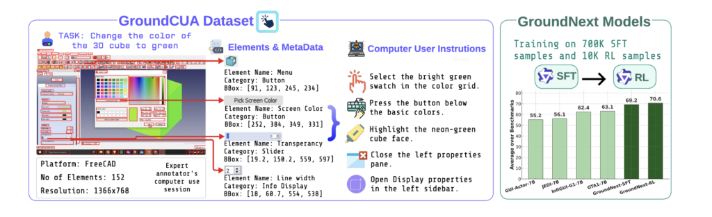
Building reliable computer-use agents requires accurately connecting natural language instructions to the correct on-screen elements. We introduce GroundCUA, large-scale dataset & GroundNext family of models.
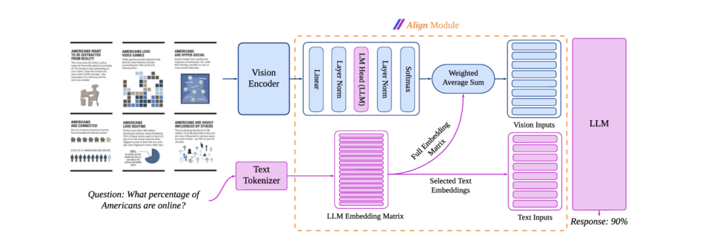
A novel approach to bridging vision and language latent spaces for multimodal understanding in VLMs that maps vision features into a weighted average of LLM text embeddings, ensuring they remain in a space that the LLM can effectively interpret.
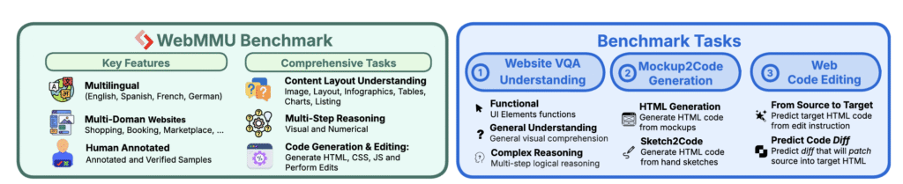
Address a critical gap in AI evals: how well can models understand and build websites. Unlike many recent works, we collected a real-world, challenging dataset with 117 expert annotators across diverse domains. It is multilingual.
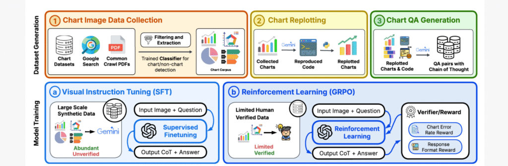
Chart comprehension is crucial for effective human decision-making, yet current VLMs struggle with this task due to limitations in training data and methodologies. We introduce BigCharts-R1, a state-of-the-art chart reasoning model, alongside a novel dataset and training framework.
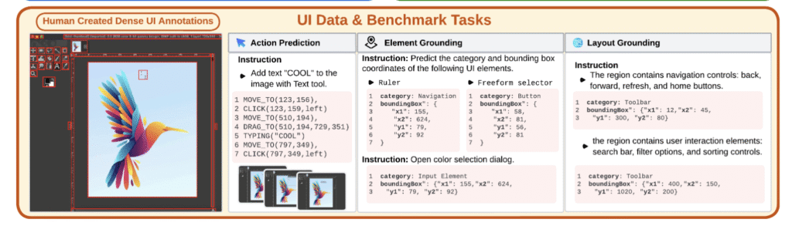
first comprehensive, license-permissive benchmark for offline, fine-grained evaluation of CUA agents in real-world desktops. We provides: (i) dense, high-quality annotations of human demonstrations, including bounding boxes, UI labels, and action trajectories across 83 software applications.
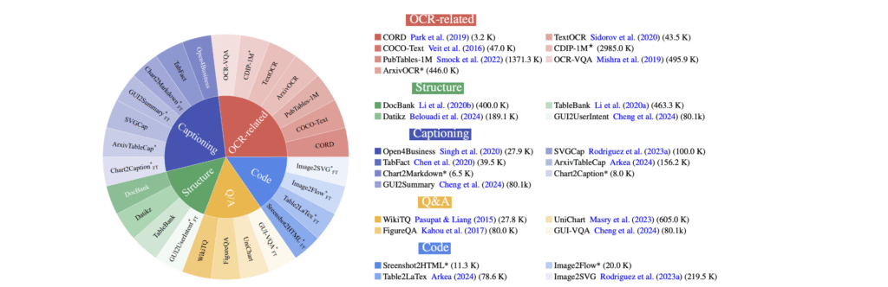
BigDocs is a multimodal dataset effort for advanced document understanding, consisting of two key components: BigDocs-7.5M: A high-quality, open-access, large-scale dataset of 7.5 million multimodal documents spanning 30 tasks BigDocs-Bench: A benchmark suite with 10 real-world-inspired tasks like reasoning over graphical user interfaces (GUI).

GenRL allows one to specify tasks through vision and/or language prompts, ground them in the embodied domain’s dynamics, and learns the corresponding behaviors in imagination. This exhibits strong multi-task generalization in locomotion and manipulation domains. Read more.
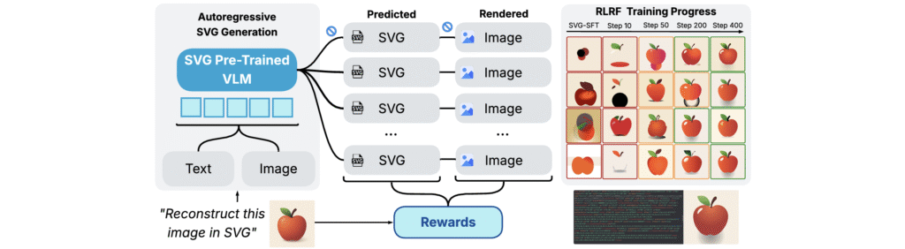
RL way to enhances SVG generation in autoregressive VLMs by leveraging feedback from rendered SVG outputs. SVG roll-outs are rendered and compared to original image to compute a reward. This visual fidelity feedback guides model to produce more semantically coherent SVGs.
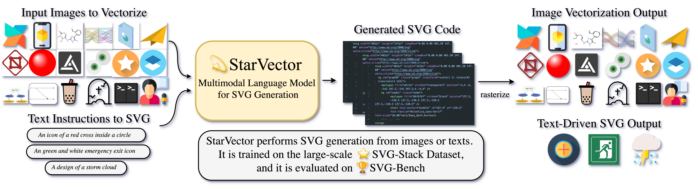
GenRL allows one to specify tasks through vision and/or language prompts, ground them in the embodied domain’s dynamics, and learns the corresponding behaviors in imagination. This exhibits strong multi-task generalization in locomotion and manipulation domains. Read more.

We introduce a general approach that empowers world model-based agents to effectively solve object-positioning tasks. We propose two declinations of this approach for generative world models: position-conditioned (PCP) and latent-conditioned (LCP) policy learning Read more.
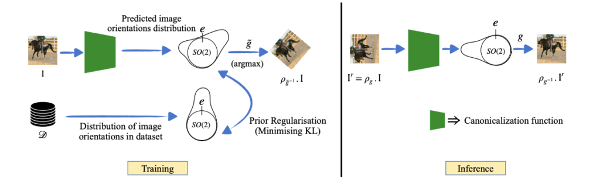
Equivariant networks are specifically designed to ensure consistent behavior with respect to a set of input transformations, leading to higher sample efficiency and more accurate and robust predictions. Read more
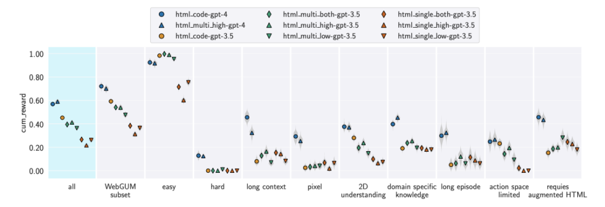
In this work, we investigate the challenges associated with developing goal-driven AI agents capable of performing novel tasks in a web environment using zero-shot learning. Our primary focus is on harnessing the capabilities of large language models (LLMs) as generalist web agents interacting with HTML-based user interfaces (UIs). Read more

In this work, we study the URLB and propose a new method
to solve it, using unsupervised model-based RL, for pre-training the agent, and a task-aware finetuning strategy combined with a new proposed hybrid planner, Dyna-MPC, to adapt the agent for downstream tasks. Read more

a model-based agent that exploits its world model to learn and adapt skills in imagination. We decouple the exploration and skill learning processes, being able to discover skills in the latent state space. During adaptation, the agent uses a meta-controller to evaluate and adapt the learned skills efficiently by deploying them in parallel in imagination. Read more

We approach this problem from the lens of Koopman theory, where the
nonlinear dynamics of the environment can be linearized in a high-dimensional latent space. This allows us to efficiently parallelize the sequential problem of long-range prediction using convolution while accounting for the agent’s action at every time step. Read more
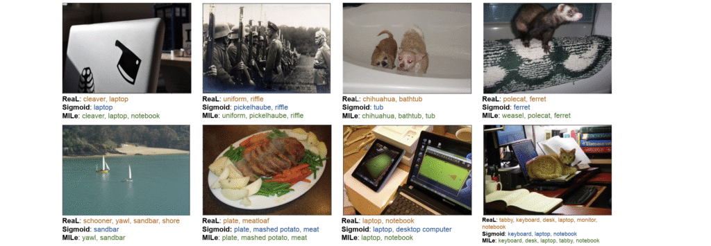
Transfer learning from large-scale pre-trained models has become essential for many computer vision tasks. Recent studies have shown that datasets like ImageNet are weakly labeled since images with multiple object classes present are assigned a single label. Inspired by language emergence literature, we propose MILe to incorporate the inductive biases of multi-label learning from single labels using iterated learning. Read more
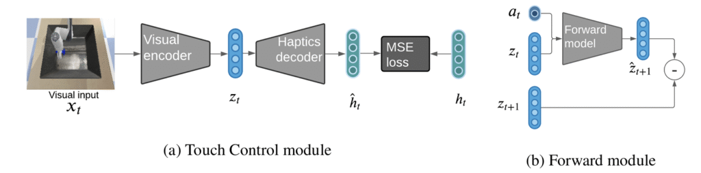
we leverage surprise from mismatches in touch feedback to guide exploration in hard sparse-reward reinforcement learning tasks. Our approach, Touch-based Curiosity (ToC), learns what visible objects interactions are supposed to “feel” like. We encourage exploration by rewarding interactions where the experience do not match. We test on a range of touch-intensive robot tasks (e.g. pushing objects, opening doors)